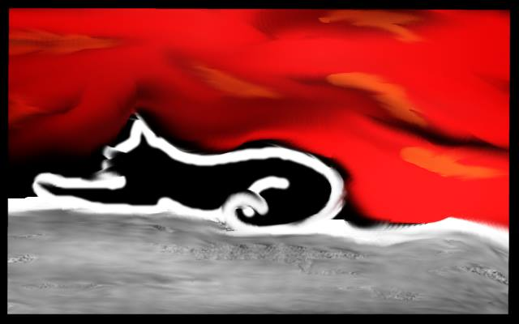
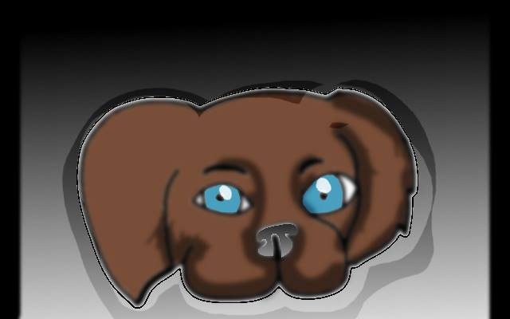
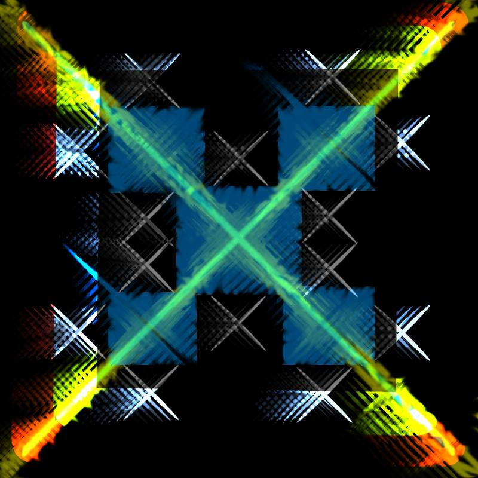
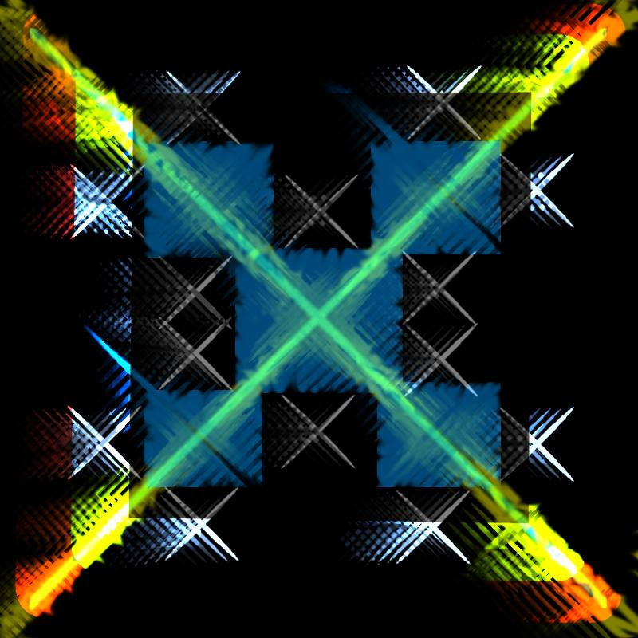

Since childhood, I've enjoyed drawing. When I became comfortable using a computer, I started
using graphics programs to create digital artwork. The main program I create art in is the Gimp,
which is a free graphics program. I have also used Paint Shop Pro 7 and Microsoft Paint.
I believe anyone with curiosity and a bit of time can make digital artwork! There are tons of video
and text tutorials out there. The concept of layers has taken my digital artwork to a more sophisticated
level.
Animals
When I was a kid, I was obsessed with horses and loved drawing them. At first, my drawings were really bad
(even for a kid). But with consistent practice and studying drawing books, I became much better. These days,
I prefer drawing cats to horses. Below are some examples of my digital animal creations:




People
After animals, people are my most favorite subject for artwork, especially faces.
Here a few of my creations:
Nature
I love taking pictures in nature, but drawing nature scenes are more difficult for me.
That's why there are fewer creations here than in my other subjects.
Abstract
Digital abstract images are often my favorite to create because there are no rules.
I have the freedom to explore various elements of the graphics software without feeling
restrained, and it's super fun!


 
